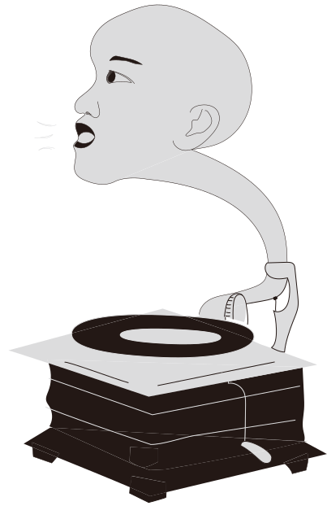
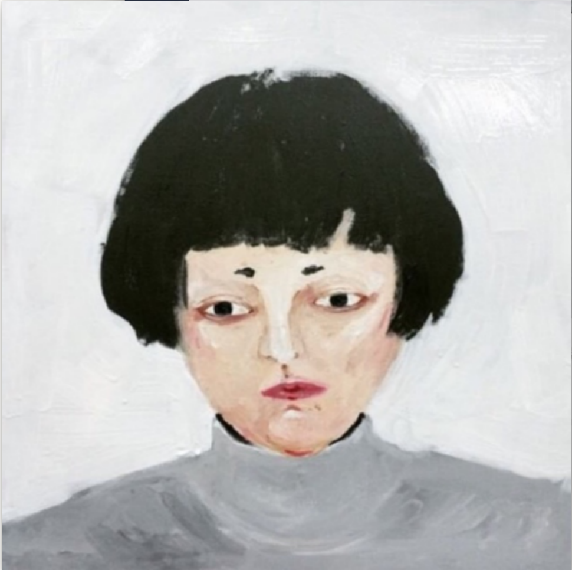

<!DOCTYPE html>
<html lang="en"></html>
<head>
  <meta charset="UTF-8"/>
  <meta name="viewport" content="width=device-width, initial-scale=1.0"/>
  <title>LAN'S PORFTOLIO</title>
  <link rel="stylesheet" href="css/reset.css"/>
  <link rel="stylesheet" href="css/base.css"/>
  <link rel="stylesheet" href="css/layout.css"/>
  <link rel="stylesheet" href="css/component.css"/>
</head>
<body>
  <div class="wrapper" id="proftolio">
    <header class="section">
      <div class="container">
        <div class="title_box">
          <div class="title"></div>
        </div>
      </div>
      <div class="gif_box"></div>
      <h3 class="name">CHIA CHI LAN</h3>
    </header>
    <div class="section sec_character">
      <div class="container">
        <div class="title_box">
          <div class="title">Characteristics</div>
        </div>
        <div class="row character_boxs">
          <div class="character_box col-sm-4">
            <div class="box_title">跨領域學習能力</div>
            <div class="box_text"> 擁有理工、設計背景，自我追求技術的提升與策略性思考，重視以開放的態度學習新知。目前計畫學習前端開發領域、網頁效能的優化以及精進使用者經驗的思考。</div>
          </div>
          <div class="character_box col-sm-4">
            <div class="box_title">溝通與整合能力</div>
            <div class="box_text">善於團體合作與專案管理，並喜歡研究各項工具，認為工具是一個可將想法有效率及忠實呈現的利器和載具。</div>
          </div>
          <div class="character_box col-sm-4">
            <div class="box_title">喜愛分享與挑戰</div>
            <div class="box_text">對於未知的領域喜歡嘗試與深入研究，時常為了有趣的想法赴湯蹈火，並樂於分享心得及教學相長。</div>
          </div>
        </div>
      </div>
    </div>
    <div class="section sec_exprience">
      <div class="title_box">
        <div class="title">Eeprience</div>
      </div>
      <div class="block">
        <div class="container">
          <div class="row">
            <div class="col-sm-4 exprience_box box1">
              <div class="box_number">1</div>
              <div class="box_title">立城都市計畫公司<span>規劃師</span></div>
              <li class="box_text">規劃市地重劃區公共設施並執行專案管理</li>
              <li class="box_text">物聯網設計發想</li>
            </div>
            <div class="col-sm-4 exprience_box box2">
              <div class="box_number">2</div>
              <div class="box_title">大誠設計<span>設計師</span></div>
              <li class="box_text"> CI設計</li>
              <li class="box_text">畫冊編排</li>
              <li class="box_text"> 藝術品圖像校色</li>
              <li class="box_text">印刷品質管理</li>
            </div>
            <div class="col-sm-4 exprience_box box3">
              <div class="box_number">3</div>
              <div class="box_title">其他參與</div>
              <li class="box_text"> 成大頂樓影展籌辦</li>
              <li class="box_text"> pappa店家 空間規劃</li>
              <li class="box_text"> 「畫不出美的線條」展</li>
            </div>
          </div>
        </div>
      </div>
    </div>
    <div class="section sec_work">
      <div class="container_fluid">
        <div class="title_box">
          <div class="title">Works</div>
        </div>
        <div class="work_nav">
          <div class="work_nav_item active" @click="work_click(web,0)"> Web</div>
          <div class="work_nav_item" @click="work_click(illustration,1)">   Graphic</div>
        </div>
        <div class="works">
          <div class="container"><a class="workbox" :href="i.url" target="_blank" v-for="i in now_data">
              <div class="work_pic"></div>
              <div class="work_name">{{i.name}}</div></a></div>
        </div>
      </div>
    </div>
    <div class="section sec_life">
      <div class="container">
        <div class="title_box">
          <div class="title">Life</div>
        </div>
        <div class="row">
          <div class="col-sm-8 col-sm-push-1 col-12">
            <div class="info">
              <h4>電影</h4>
              <p>三日不觀片，便覺面目可憎，生活乏味。喜歡的題材廣泛，特別是講述人和人之間情感糾結的電影文本。</p>
              <p>曾參與短片拍攝，並於台南39小時限時拍片競賽獲獎。</p>
              <h4>音樂</h4>
              <p>喜愛饒舌、後搖、藍調與實驗性曲風等，對於音樂與新媒體整合型藝術表驗為之瘋狂。目前持續精進吉他，期望演奏能力可以更為成熟。</p>
            </div>
          </div>
          <div class="col-sm-4 sing_box"></div>
        </div>
      </div>
    </div>
    <div class="section sec_contact">
      <div class="container">
        <div class="title_box">
          <div class="title">Contact</div>
        </div>
        <div class="contactbox">
          <div class="infobox">
            <div class="info">0935858257</div>
            <div class="info">r3t42000@gmail.com</div>
          </div>
        </div>
      </div>
      <div class="pagetop_button"></div>
    </div>
  </div>
  <script src="js/jquery.js"></script>
  <script src="js/vue.js"></script>
  <script src="js/proftolio.js"></script>
</body>